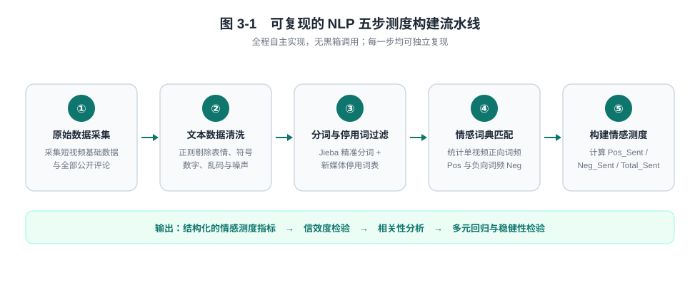
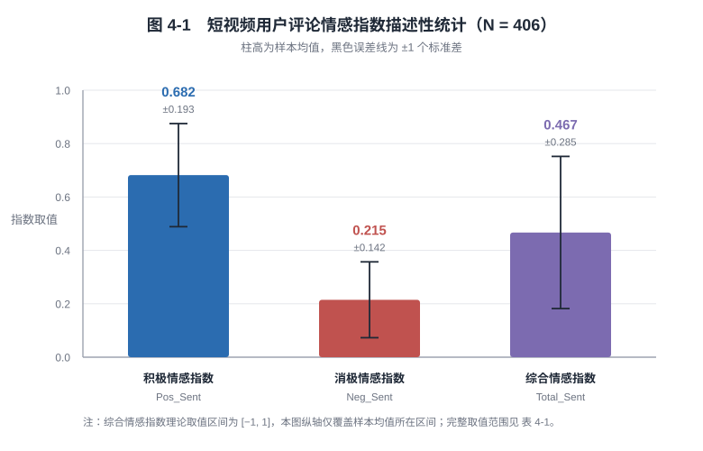
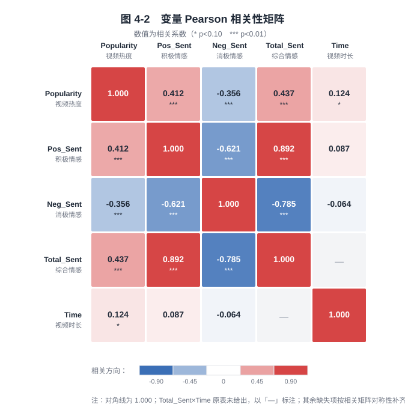
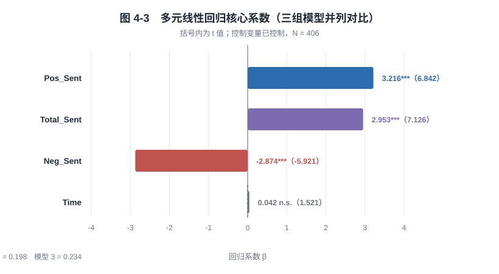
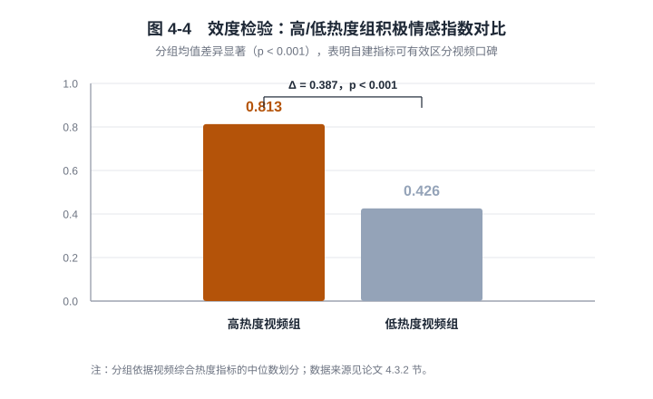

摘要 ABSTRACT
研究背景、方法路径与核心发现
随着移动互联网与新媒体技术的飞速发展，短视频已经成为国民最主要的娱乐与信息获取渠道。用户评论作为短视频最重要的非结构化文本数据， 蕴含用户真实的观看体验、情感态度与行为偏好，是反映视频口碑与传播潜力的核心数据载体。
现有相关研究多直接采用平台现成的情感标签或简单词频统计，缺少自主构建 NLP 情感测度指标的完整研究流程， 存在测算精度低、研究可复现性差、数据分析流程不规范等问题。本研究基于大数据管理与应用专业的 NLP 文本测度构建方法， 以抖音短视频公开数据为研究样本，通过完整的文本大数据处理流水线自主构建用户评论情感指数，量化用户积极、消极、中性情感倾向， 并在此基础上实证检验用户评论情绪对短视频热度的影响机制。
研究选取生活、美食、娱乐三大热门类别，完成数据爬取、文本清洗、分词去停用词、情感词匹配、情感指数计算全流程 NLP 处理， 通过信效度检验验证自建指标的有效性，结合相关性分析与多元线性回归开展实证研究。
关键词
自然语言处理 · NLP 测度构建 · 短视频 · 用户评论 · 情感分析 · 视频热度 · 大数据分析
研究路线

以上为摘要内容。→ 阅读论文全文 （第 1~6 章正文、6 个测度公式、3 张数据表格、参考文献与致谢）
核心研究结论 KEY FINDINGS
三条研究假设全部通过检验
关键指标一览
延伸结论
- 口碑情绪是核心隐性因素：相较于视频时长等外在形式因素，用户观看后的情感体验与口碑评价对传播效果的影响更为关键（
Time系数不显著）。 - 正向循环机制：优质内容收获大量积极评论，形成「正向口碑 → 高热度 → 持续传播」的良性循环；劣质内容的负面评价则直接限制流量传播。
- 方法论价值：研究完整实现了从非结构化文本到结构化量化指标的大数据分析流程，可复用于短视频舆情分析、口碑测评与流量预测场景。
研究设计 RESEARCH DESIGN
数据来源、样本筛选与变量定义
抽样范围：生活、美食、娱乐三大热门类别
随机采集 420 条 → 预处理后有效样本 406 条
剔除规则：无效短评、零互动视频、违规下架视频、纯广告视频
Pos_Sent = Pos / (Pos + Neg + ε)
Neg_Sent = Neg / (Pos + Neg + ε)
变量定义
| 变量类型 | 变量名称 | 符号 | 说明 |
|---|---|---|---|
| 被解释变量 | 短视频热度 | Popularity | 点赞量、评论量、转发量标准化后的综合指标 |
| 核心解释变量 | 积极情感指数 | Pos_Sent | 用户评论整体正向情绪程度 |
| 消极情感指数 | Neg_Sent | 用户评论整体负向情绪程度 | |
| 综合情感指数 | Total_Sent | 用户评论整体情感倾向 | |
| 控制变量 | 视频时长 | Time | 短视频播放时长，影响观看完成率 |
| 视频类别 | Type | 生活、美食、娱乐三类虚拟变量 |
图表 FIGURES & TABLES
全部图形依据论文表格与正文数值重绘，矢量格式，可无损缩放




表 4-3 多元线性回归结果
| 变量 | 模型 1 (Pos_Sent) | 模型 2 (Neg_Sent) | 模型 3 (Total_Sent) |
|---|---|---|---|
Pos_Sent | 3.216*** (6.842) | — | — |
Neg_Sent | — | −2.874*** (−5.921) | — |
Total_Sent | — | — | 2.953*** (7.126) |
Time | 0.042 (1.521) | 0.038 (1.396) | 0.041 (1.487) |
| 控制变量 | 已控制 | 已控制 | 已控制 |
| 调整 R² | 0.226 | 0.198 | 0.234 |
| 样本量 | 406 | 406 | 406 |
括号内为 t 值；*** p < 0.01。
材料组织 MATERIALS
论文正文、图表、参考文献、补充材料与可执行代码的完整组织结构
本在线站点提供论文全文与全部图表的在线浏览；上表其余目录为材料的磁盘组织方式， 其中表 4-1 ~ 表 4-3 的完整数值已在下文「图表」章节中呈现。
可执行代码
cd code
pip install -r requirements.txt
python make_sample_data.py # 生成示例数据
python sentiment_pipeline.py --comments data/sample_comments.csv \
--videos data/sample_videos.csv \
--out out # NLP 五步流水线
python empirical_analysis.py --input out/sentiment_index.csv \
--out out # 描述统计 / 相关 / 回归
原始短视频评论语料采集自公开平台，受平台数据政策与个人信息保护要求约束，未随本仓库公开。
code/data/sample_*.csv 为固定随机种子构造的结构演示数据，其数值与论文的 406 条样本没有任何关系。
论文可复算的全部结果（表 4-1 ~ 表 4-3）已完整导出至 tables/，可直接用于核对与二次分析。
引用 CITATION
如在研究中参考本材料，请按以下格式引用
@misc{shortvideo_comment_sentiment,
title = {基于 NLP 文本情感分析的短视频用户评论情绪对视频热度的影响研究},
author = {孙雨霏},
year = {2024},
note = {大数据管理与应用专业}
}
材料目录中同时提供 CITATION.cff（Citation File Format），支持自动生成 APA / BibTeX 引用。